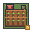
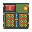
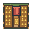

Farm evolution
Three original 32 × 32 pixel-art designs, displayed without smoothing. Each occupies exactly one terrain tile. The 4th gameplay level temporarily uses level 3 art.

Level 1Newly cultivated soil and sparse seedlings

Level 2Irrigated green growing plots

Level 3Ripe wheat and grain storage
The farm is a legacy building in the current game. New matches provide food through captured terrain and harvesting sites. This page lets you review its artwork directly on the website without changing game balance.